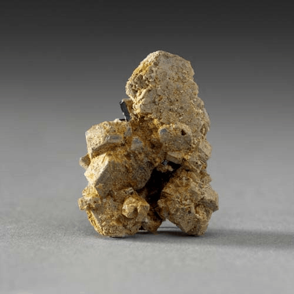

Gadolinite-(Y) - FeBe2Y2Si2O10
Nesosilicates


Habit: Pale green, green or blue green when unaltered and nonmetamict; black or red brown when partly altered and metamict. Generally found in compact masses, but when crystals form, they are prismatic; often metamict or partly so. Vitreous to greasy luster; opaque, but nearly transparent in thin fragments. Greenish gray streak.
Environment: Occurs most often in alkalic granitic pegmatites or granites.
Etymology: Named for J. Gadolin (1760-1852), a Finnish chemist, who first separated out yttrium in 1794.